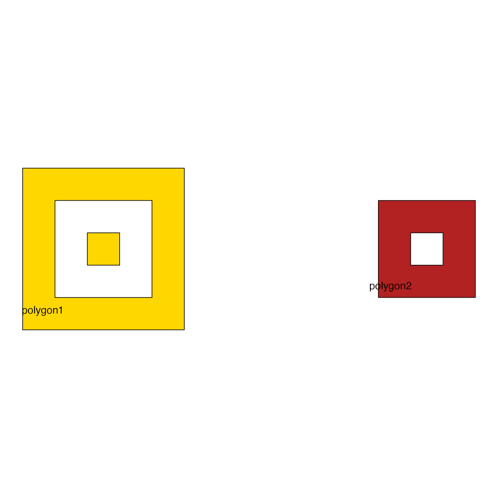
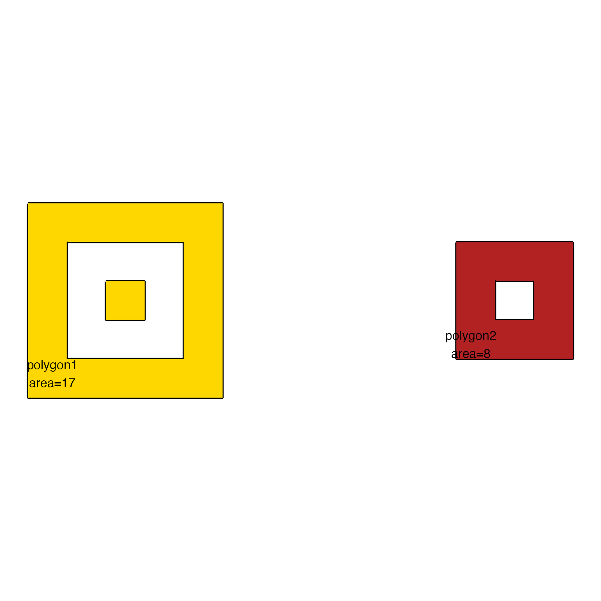

Area for each polygon in JamPolygon
Usage
area_JamPolygon(
jp,
apply_abs = FALSE,
flip_sign = 1,
return_list = FALSE,
verbose = FALSE,
...
)Arguments
- jp
JamPolygon- apply_abs
logical(default FALSE) indicating whether to use the absolute value of the area prior to applying the orientation.When FALSE, it uses the orientation of the points, where clockwise indicates positive, and counter-clockwise indicates negative.
When TRUE it calculates absolute area, and flips the sign based upon the orientation from
add_orientation_JamPolygon(), which itself defines orientation based upon (1) the clockwise nature of points, and (2) whether the polygon is inside a parent polygon.
- flip_sign
integerindicating whether to flip the sign of the orientation, and is passed toadd_orientation_JamPolygon().- return_list
logicalindicating whether to return alistwith area of each polygon part, onenumericvector per row injp@polygons. Note that this step does not indicate which polygon hole is encompassed inside another larger polygon, so it cannot directly be used to determine the largest polygon in complex nested polygon structures.- ...
additional arguments are ignored.
Value
numeric vector with the area of each polygon, one value
per row in jp@polygons.
Or when return_list=TRUE a list where each element is produced
per row of jp@polygons, containing a numeric vector with the area
of each polygon part. Note that holes are represented with negative
area multiplied by the orientation of the parent encompassing polygon.
Details
This function calculates the area of each individual polygon (row)
represented in a JamPolygon object. It calculates total area
of multi-part polygons, which by default calculates the positive area
of polygons, and subtracts area for any holes. The orientation defines
the presence of holes using add_orientation_JamPolygon().
For example, it is possible to have three concentric circles as a three-part polygon. By convention, the first polygon defines the outer border, the second polygon defines an inner border hole), and the third polygon defines a nested internal polygon.
Todo:
Consider simplifying polygons beforehand, to guarantee that no multi-part polygons contain overlapping sections. Currently this function assumes the input polygons are already simplified, such that multi-part polygons on one row of
jp@polygonsdo not contain partially overlapping polygons, instead polygons are either adjacent, fully overlapping (holes), or fully disconnected.
See also
Other JamPolygon:
JamPolygon-class,
Venndir-class,
[,JamPolygon,ANY,ANY,ANY-method,
add_orientation_JamPolygon(),
bbox_JamPolygon(),
buffer_JamPolygon(),
check_JamPolygon(),
check_Venndir(),
eulerr_to_JamPolygon(),
farthest_point_JamPolygon(),
find_venn_overlaps_JamPolygon(),
has_point_in_JamPolygon(),
intersect_JamPolygon(),
label_fill_JamPolygon(),
label_outside_JamPolygon(),
label_segment_JamPolygon(),
labelr_JamPolygon(),
minus_JamPolygon(),
nearest_point_JamPolygon(),
nudge_JamPolygon(),
plot.JamPolygon(),
point_in_JamPolygon(),
polyclip_to_JamPolygon(),
polygon_circles(),
polygon_ellipses(),
sample_JamPolygon(),
split_JamPolygon(),
union_JamPolygon(),
update_JamPolygon()
Examples
df3 <- data.frame(name=c("polygon1", "polygon2"),
label=c("polygon1", "polygon2"),
x=I(list(
list(c(1, 6, 6, 1),
c(2, 5, 5, 2),
c(3, 4, 4, 3)),
list(#c(11, 16, 16, 11),
c(12, 15, 15, 12),
c(13, 14, 14, 13))
)),
y=I(list(
list(c(1, 1, 6, 6),
c(2, 2, 5, 5),
c(3, 3, 4, 4)),
list(#c(1, 1, 6, 6),
c(2, 2, 5, 5),
c(3, 3, 4, 4))
)),
fill=c("gold", "firebrick"))
jp3 <- new("JamPolygon", polygons=df3);
plot(jp3);

area_JamPolygon(jp3)
#> [1] 17 8
jp3@polygons$label <- paste0(names(jp3),
"\narea=", area_JamPolygon(jp3));
plot(jp3)

area_JamPolygon(jp3, return_list=TRUE)
#> [[1]]
#> [1] 25 -9 1
#>
#> [[2]]
#> [1] 9 -1
#>